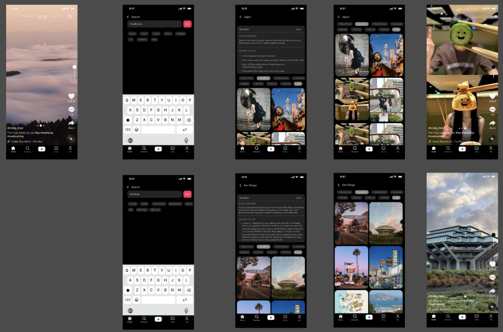
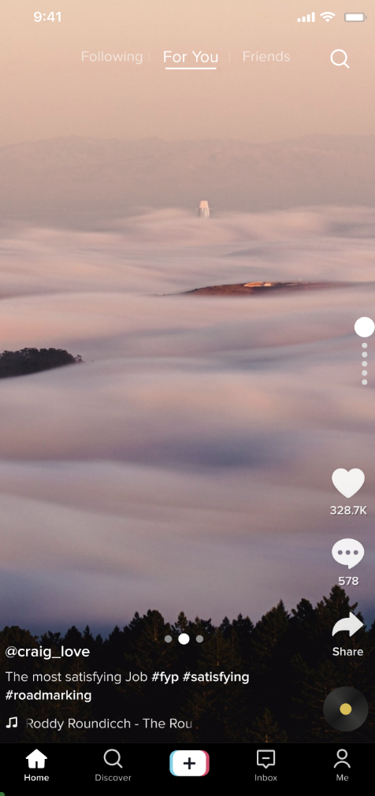
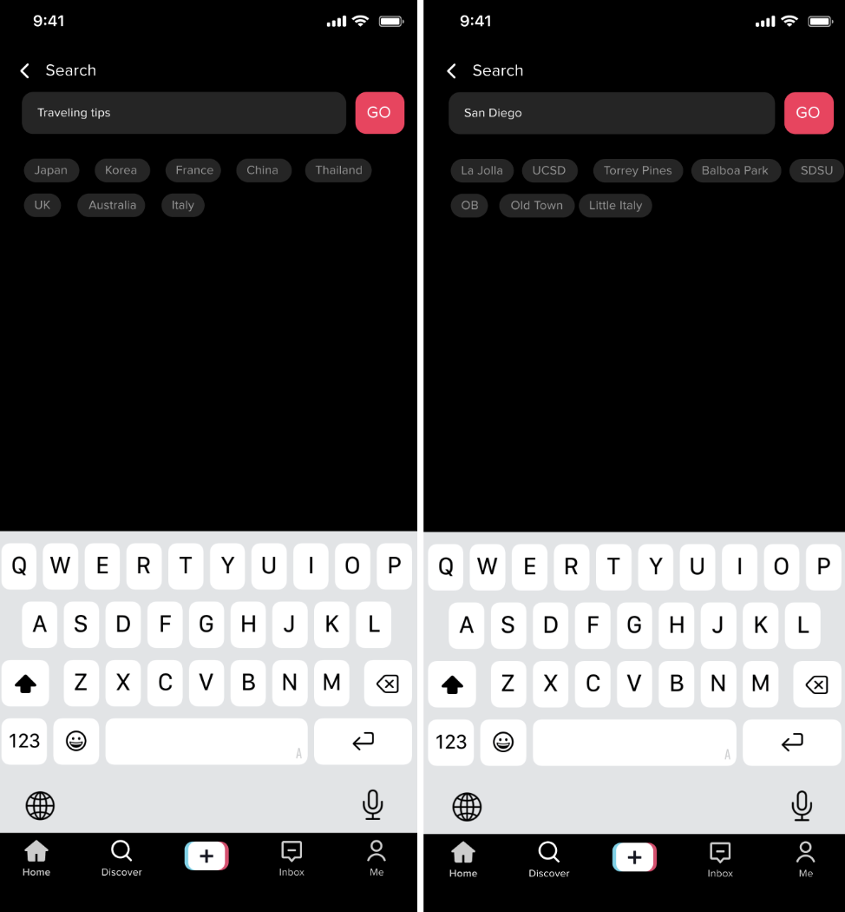
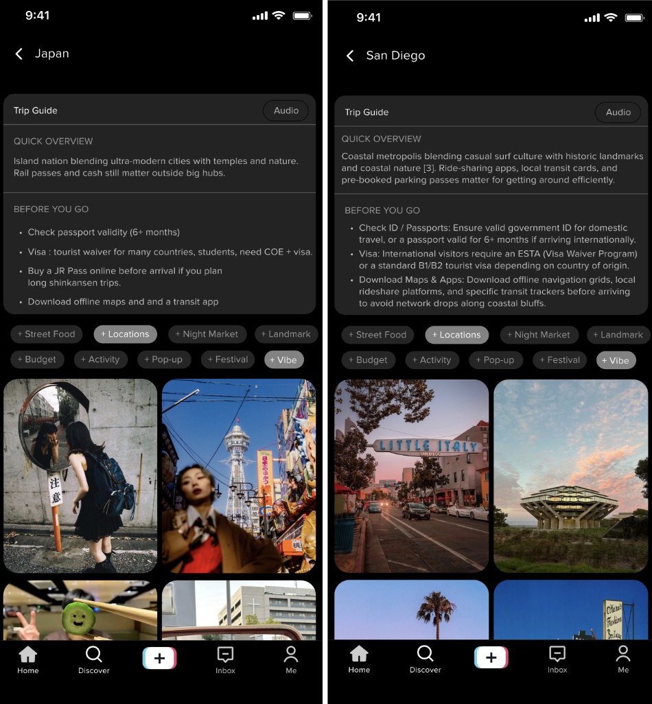
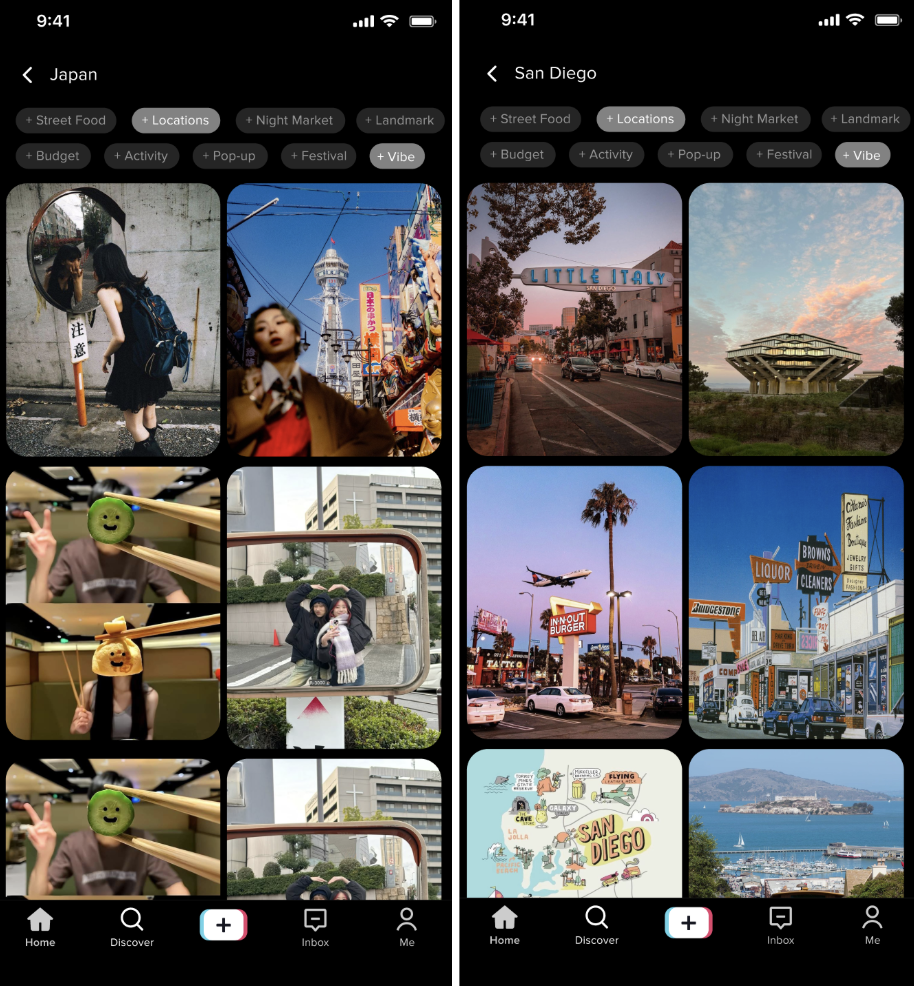
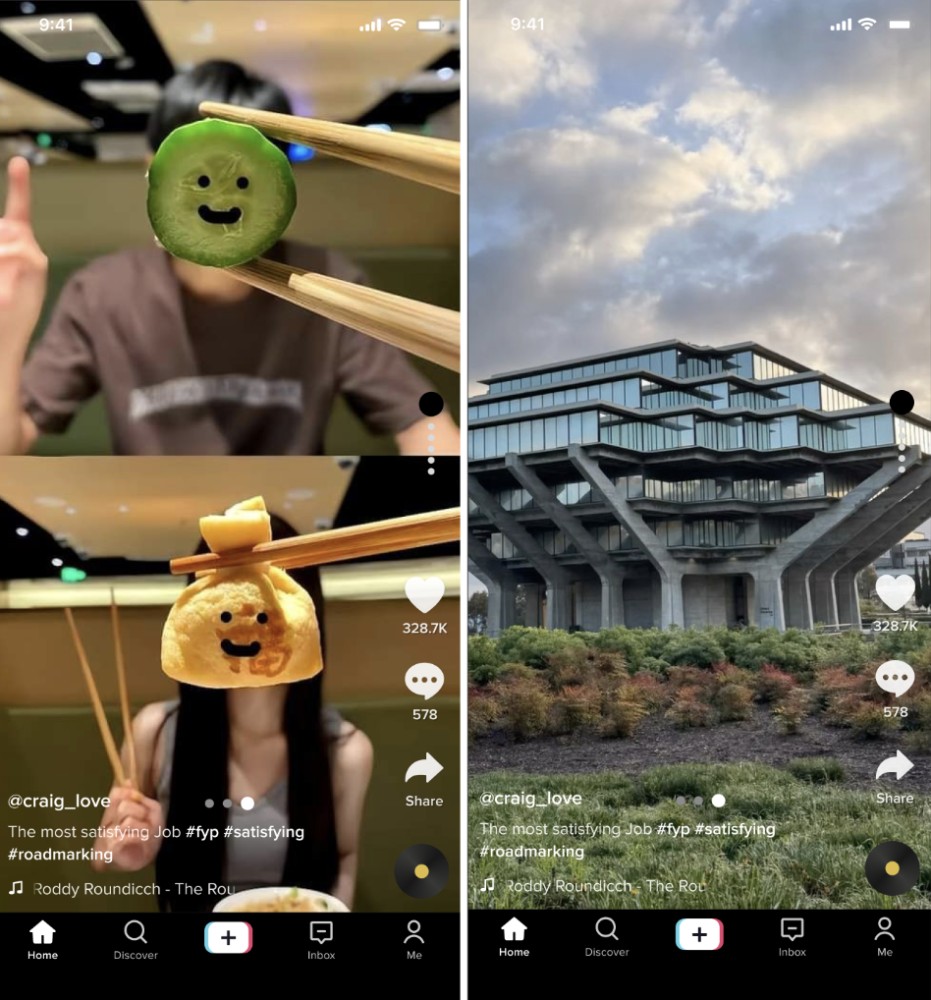

From video replies to a Cultural Travel Hub: a TikTok UX pivot
Team: Nicholas Campos, Christian Lee, Chuck Davies, Ran Ji · TA section project
We started with one problem—video replies buried inside TikTok's comment section—and ended up somewhere more interesting: a Cultural Travel Hub that helps young adults actually do something with the content they discover. This is the story of that pivot.
Overview
The original question
We explored an extension to TikTok (educational prototype; not affiliated with ByteDance) targeting young adults ages 18–30. The starting hypothesis: video replies are buried in comment sections or surfaced inconsistently by the algorithm, making it hard for users who want to follow a response thread. Our first design added a clearer path from comments into a dedicated, structured feed of video replies—with grid scanning and cultural-category tabs.
The pivot
By Milestone 5, user testing pushed us away from reply-browsing and toward something more purposeful: a Cultural Travel Hub—a destination guide combining written summaries, category filters (food, transportation, safety), video grids, and full-screen playback. The shift happened because participants kept saying the travel direction "helps me actually do something," while enhanced reply browsing mainly meant more scrolling.
Why I care (personal stake)
Throughout this project I was wary of features that only optimize time-on-app. The pivot to a travel guide resolved that tension cleanly: success is no longer "did the user watch more videos?" but "did they leave better prepared for a trip?" That shift in success metric is the most satisfying part of the design evolution for me.
My role
I contributed to research synthesis, interaction framing, and our high-fidelity prototype direction across both milestones. This write-up is my own framing of the shared work; raw notes and full deliverables live in our team Google Doc.
User research
Goals & questions
We wanted to understand:
- How people currently move from a video into related or response-based content.
- Whether "staying on one topic" is something users want, or just something the algorithm occasionally delivers.
- How comments and video replies fit into that mental model.
- What would make a feature feel useful rather than just engaging.
Methods
We ran two semi-structured interviews with heavy TikTok users (daily usage, self-described "rabbit hole" behavior). We used a think-aloud prompt—open the app, scroll normally, narrate what draws attention—and then concept-tested both the swipe-into-replies idea and, later, the travel hub direction with verbal walkthroughs.
What we heard
- Rabbit holes are real and intentional. Both participants described deliberately chasing single topics for long sessions. Manual search was their main tool; they wanted something more fluid.
- Comments are a navigational layer. They function as social proof, narrative context, and jumping-off points—not a dead end. People check comments to decide whether to keep watching.
- Friction switching from watching to finding. Moving from "I'm interested in this thread" to "show me more like this" meant falling back on search or hoping the algorithm delivered—neither felt reliable.
- Positive early reaction to structured reply browsing. The first concept tested well: participants said they would "definitely use it" and felt it would make exploration "more intentional."
What the research revealed later — the pivot trigger
When we tested the Milestone 5 travel hub concept alongside the reply-browsing design, a clear preference emerged. The travel guide felt like it had "a clearer purpose." Users wanted tools that helped them plan and act—not just browse. Specific feedback that shaped the final direction:
- Written guidance alongside video mattered; text formatting and visual hierarchy were noticed immediately.
- Grid layouts helped users compare content before committing to a full video watch.
- Captions over auto-dubbing was a consistent preference—for accessibility and authenticity.
- Specific categories (food, transportation, safety) made the experience feel practical rather than exploratory for its own sake.
Design evolution
M4Video reply threading
Our first prototype follows the original hypothesis: from the For You feed, open comments, then enter a structured vertical reply stream. Tabs separate "General" and "Cultural" perspectives; a grid mode lets users scan multiple replies at once before choosing one to watch in full screen.
↕ scroll inside · 8 screens


M5Cultural Travel Hub
After user testing surfaced a clear preference for practical utility over passive discovery, we pivoted to a Cultural Travel Hub: a TikTok-native destination guide for young adults exploring travel or relocation. The design combines:
- A Trip Guide page with written summaries and structured visual hierarchy alongside video content.
- Category filters (food, transportation, safety, accommodation) so users can browse by need rather than by recency or popularity.
- Grid browsing preserved from M4—users compare thumbnails before committing to a watch.
- Caption-first localization instead of auto-dubbing, prioritizing accessibility and authentic voice.
↕ scroll inside · 6 screens






User testing
After building the M5 prototype, we ran two informal user tests to validate the direction. Participants were shown the Cultural Travel Hub via screen-share walkthrough—For You feed → Search → Trip Guide → filtered grid → full-screen video.
Participants
- Participant 1 — Electrical Engineering student; uses TikTok to search for information and learn about topics. Strong fit: the feature targets turning TikTok into a structured discovery tool.
- Participant 2 — Cognitive Science student; watches sports and travel content, has personal travel experience. Could evaluate both entertainment value and practical travel utility.
Findings
"It feels like it has a clearer purpose. The old reply concept was entertaining, but the new one feels more useful."The video-reply concept didn't clearly solve a practical problem; the travel hub reframes the feature around real-world preparation.
"Because it helps me actually do something. If I'm going somewhere, I need information."Users weren't looking for more videos to passively watch—they wanted a tool that helps them find useful, actionable information quickly.
"Some parts could be bolded—I want important text to stand out."Participants found the content useful but wanted better formatting: bold key terms, cleaner bullet-point structure. The issue wasn't the information itself—it was scanability.
"The grid is really helpful because I do not have to scroll through videos to decide one by one."Maintaining the grid as the intermediate step between Trip Guide and full-screen video was validated directly—it supports decision-making rather than passive consumption.
"I would prefer captioned videos instead of dubbing. Dubbing can feel weird or distracting. Captions are enough for me."Caption-first localization should be the default—preserving the creator's authentic voice while serving users who don't share the creator's language.
Next iteration priorities
Based on testing: improve Trip Guide page formatting with bold key terms and clearer bullet hierarchy (Finding 4); maintain the grid view between Trip Guide and full-screen video (Finding 5); implement captions as the default translation option, with auto-dubbing as opt-in (Finding 6).
Key insights & reflection
What I learned about design pivots
The pivot wasn't a failure of the original idea—it was the research working as intended. M4's video reply concept had real user enthusiasm. But enthusiasm for a feature isn't the same as evidence that the feature improves someone's life. The travel hub direction earned qualitatively different feedback: not just "I'd use this" but "this would change how I prepare for trips."
The engagement vs. utility tension
I came into this project wary of features that only optimize time-on-app. The final design resolved that concern in a concrete way: grid views and written summaries are optimized for decision-making, not scroll depth. Captions over auto-dubbing serves users who don't share the creator's language. These choices reflect a design stance, not just aesthetic preference.
What comes next
The refined direction calls for improved Trip Guide page formatting, maintained grid browsing, and caption-based localization as a first-class feature. Evaluation should focus on task completion and travel preparedness—not session length.
Disclaimer: Independent student project for COGS 127. UI is an educational homage; TikTok and related marks belong to their owners.